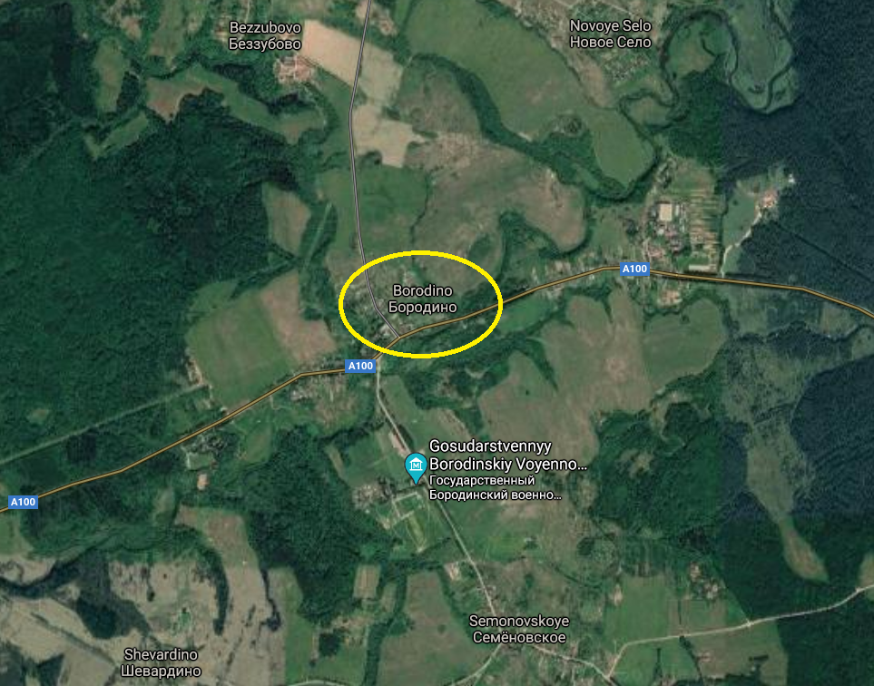
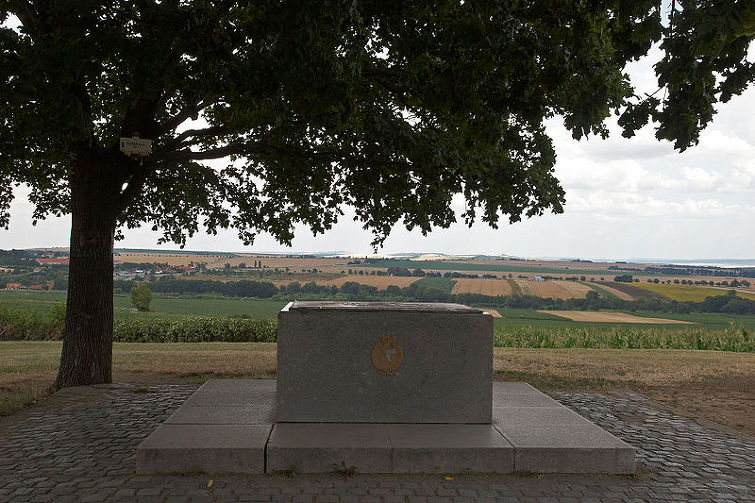
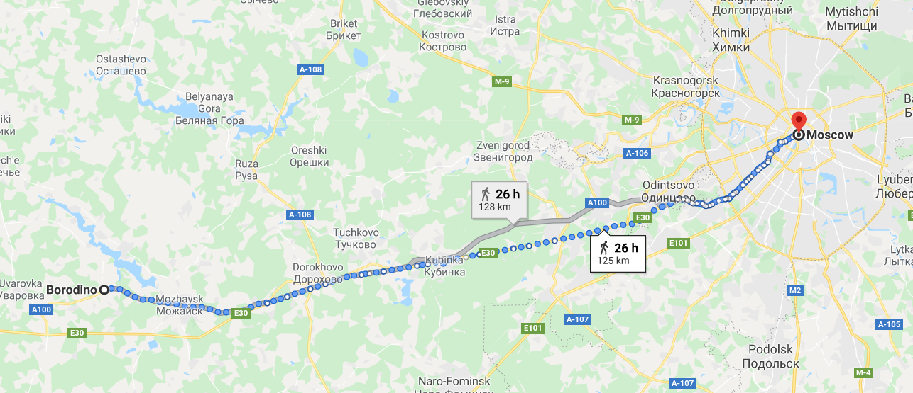
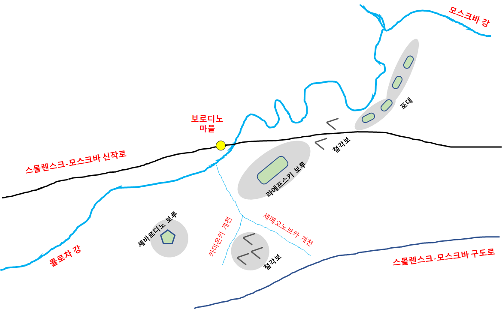
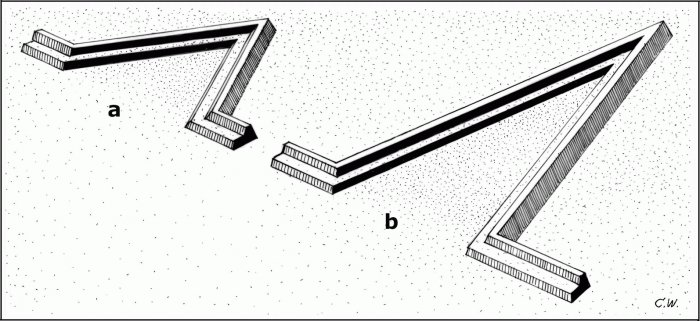

보로디노 전투 (1) - 러시아군의 방어선 구축
게시: 2020-07-27T06:30:37+09:00
9월 3일, 톨의 안내를 받으며 보로디노 현장에 도착한 쿠투조프의 눈에도 이 지역이 나폴레옹과 맞서 싸우기에는 최적의 장소라고 판단되었습니다. 여태까지 러시아군이 철수해온 지역은 탁 트인 전형적인 러시아 평야지대였고, 특히나 나폴레옹이 진격하는데 사용하고 있던 스몰렌스크-모스크바 대로는 당연히 평탄한 지대를 따라서 흐르고 있었습니다. 당시 수적 열세에 고심하던 러시아군은 당연히 방어전을 펼치기를 원했는데, 그러자면 높은 고지나 넓고 깊은 강을 끼고 싸우는 것이 유리했습니다. 그렇다고 스몰렌스크-모스크바 대로에서 멀리 떨어진 산악 지대에 들어가 진을 칠 수도 없었습니다. 나폴레옹이 그들을 감시할 부대를 붙여놓고 그대로 모스크바로 진격할 가능성을 배제할 수 없었기 때문이었습니다. 그런데, 바로 이 보로디노 마을 인근에서 그 3박자, 즉 대로와 강과 고지가 만나 어우러지는 지형이 발견된 것입니다.

(굽이쳐 흐르는 콜로차(Kolocha) 강과 스몰렌스크-모스크바 대로, 그리고 그 중간에 있는 보로디노 마을의 오늘날의 모습입니다. 보시다시피 사실 어디가 고지라는 것인지 위성사진으로는 구분이 어려울 정도로, 보로디노의 능선은 매우 낮았습니다.) 보로디노 마을은 스몰렌스크-모스크바 대로 상에 위치한 작은 마을로서, 그 자체는 아무런 군사적 장애물이 되지 못했습니다. 그러나 이 마을 바로 동쪽에는 모스크바(Moskva) 강으로 흘러들어가는 제법 큰 지류인 콜로차(Kolocha) 강이 흐르고 있었고, 더 좋은 것은 그 강 너머 바로 동쪽면에 야트막한 언덕이 긴 능선을 이루고 있었다는 것입니다. 그렇다고 이 지역이 수비군 측에 환상적인 지형은 아니었습니다. 일단 콜로차 강은 도하에 어려운 깊고 넓은 강이 아니었고, 능선은 정말 낮아서 고지라고 부르기에는 창피할 정도였습니다. 제일 좋지 않은 부분은 이 능선이 스몰렌스크-모스크바 대로를 직각으로 가로지르는 것이 아니라, 비스듬히 가로질렀기 때문에 방어선을 짜기가 상당히 애매하다는 점이었습니다. 그래도 이보다 더 좋은 지형은 찾기 어려웠습니다. 생각해보면 아우스테를리츠에서 전략적 고지라고 불리던 프라첸(Pratzen) 고지도 그 높이는 주변 평원에 비해 12m 더 높은 것에 불과했습니다. 어차피 다들 평야지대에서 싸우던 당대 유럽 전투에서는 5미터만 더 높아도 굉장한 전술적 이점을 주는 소중한 고지였습니다. 고지는 포병에게 더 먼 사거리를 제공하기도 했지만, 무엇보다 그 일대의 전황을 한눈에 파악할 수 있다는 장점을 주었지요.

(1805년 아우스테를리츠 서쪽의 고지인 주란(Zuran) 언덕에서 내려다본 아우스텔리츠 전장의 모습입니다. 이 곳은 270m의 높이로서, 저 지평성에 보이는 프라첸 고지보다 훨씬 높습니다. 나폴레옹은 이 주란 언덕에 앉아서 프라첸 고지를 차지하고 좋아하는 오스트리아-러시아군을 훤히 내려다보고 있었습니다. 여기에는 체코 정부가 작은 기념비를 세워놓고, 아예 이 언덕 위를 '프랑스의 치외법권 지역'으로 선언했습니다.) 무엇보다, 여기 말고는 별 다른 대안이 없었습니다. 우선, 이제 더 이상 후퇴할 곳이 정말 없었습니다. 보로디노는 모스크바에서 불과 125km 떨어진 곳으로서, 강행군을 하면 3일만에 돌파할 수 있는 거리였습니다. 여기서 더 밀려나면 정말 모스크바 성벽 아래에서 싸워야 했습니다. 생각해보면 뭐 꼭 모스크바 성벽 아래에서 싸우면 안되는 법이라도 있나 싶은데, 그건 정말 곤란했습니다. 바로 2주전까지 쿠투조프가 직접 보고 느낀 상트 페체르부르그의 분위기는 전체 시민들이 '여차 하면 바리바리 싸들고 피난 간다'는 것이었습니다. 모스크바의 분위기도 크게 다르지 않다고 하면, 그런 시민들 눈 앞에서 포격전을 벌이며 농성전을 펼치는 것은 현명한 생각이 아니었고, 만약 어쩔 수 없이 철수를 한다고 하면 최소한 시민들에게 피난갈 시간적 여유를 주어야 했습니다. 따라서 적어도 모스크바에서 3일 행군 거리 이상의 지역에서 승패를 결정지어야 했습니다. 그러니 여기서 더 물러설 수가 없었습니다.

(보로디노에서 모스크바까지의 거리입니다. 걸어서 26시간이니 약간만 무리하면 3일 안에 충분히 갈 수 있는 거리입니다.)
다음 날인 9월 4일, 게으른 쿠투조프로서는 굉장히 이례적이었지만 그는 하루 종일 그 일대의 지형지물을 살펴보며 방어선 구축을 어떻게 할지 궁리했습니다. 그 결과, 대략 다음과 같이 방어선을 짜기로 했습니다. 우익 : 이 방어선의 우측 끝부분은 콜로차 강과 모스크바 강이 합류점. 4곳의 포병 진지를 능선을 따라 구축. 그리고 이 방어선을 관통하는 스몰렌스크-모스크바 대로의 양쪽에 V자 모양의 철각보(redan)를 추가 구축하고 12문의 중포를 배치 중앙 : 이 방어선의 좌측 끝부분은 콜로차 강으로 흘러들어가는 작은 지류인 세메오노브카(Semeonovka) 천. 능선 중앙부에 나중에 라에프스키 보루(Raevsky redoubt)로 불리는 약 2백 미터 길이의 보루를 쌓고 18문의 대포를 배치. 좌익 : 이 방어선의 좌측 끝부분은 셰바르디노(Shevardino) 언덕. 그러나 이 언덕과 중앙의 라에프스키 보루가 놓인 능선 사이엔 세메오노브카 개천으로 흘러들어가는 또 다른 작은 개천인 카미온카(Kamionka) 천이 있어서 하나로 연결된 방어진지 구축이 불가능. 어쩔 수 없이 카미온카 개천 뒤쪽의 평원에 3개소의 철각보(redan)를 구축하되, 셰바르디노 언덕에는 5각형의 폐쇄형 보루를 구축.

(콜로차(Kolocha) 강과 세메오노브카(Semeonovka) 개천, 그리고 보로디노 마을과 스몰렌스크-모스크바 대로, 그리고 그 대로를 비스듬하게 가로지르는 능선의 모습, 그리고 그 일대에 구축된 러시아군의 방어 진지의 개략적인 모습입니다. 제가 개발새발 손으로 그린 것이라 많이 조잡하니 양해해주십시요.)
여러분이 보시기에는 이 방어선이 매우 막강하다고 느껴지시는지요 ? 쿠투조프의 이 방어선에 대해서는 부하들도 고개를 갸우뚱하는 부분이 있었고, 심지어 쿠투조프 본인도 자신없어 하는 부분이 있었습니다. 먼저, 이 방어선에서 가장 어색한 부분은 나폴레옹이 쳐들어올 것으로 예상되는 스몰렌스크-모스크바 대로와 이루는 각도였습니다. 이 방어선이 그 대로와 직각을 이루면서 철옹성다운 모습을 보여주면 좋겠는데, 크게 비스듬하게 각을 이루다보니 방어가 상당히 어정쩡해졌습니다. 하지만 긍정적으로 생각하면 그것 자체가 큰 문제가 아닐 수도 있었습니다. 전투에서 적 부대가 꼭 길을 따라서 진격해오는 것은 아니었으니, 방어선에 대해 길이 비스듬히 나있건 직각으로 나있건 중요하지 않을 수도 있었습니다. 당시 전투라는 것은 신사들끼리의 정정당당한 대결이었으므로, 나폴레옹도 러시아군의 좌익에 프랑스군의 우익을, 러시아군의 우익에 프랑스군의 우익을 배치하여 치열하고 후회없는 한판 승부를 벌일 수도 있다는 다소 낭만적인 기대도 조금 할 수 있었습니다. 쿠투조프 본인이 생각할 때 이 방어선의 가장 큰 문제는 각도 따위가 아니라 과연 나폴레옹이 이 방어선에 달라 붙을 것이냐 하는 것이었습니다. 비교적 새로 닦인 이 스몰렌스크-모스크바 대로 바로 몇 km 떨어진 남쪽에는 옛 스몰렌스크-모스크바 대로가 거의 평행으로 지나가고 있었습니다. 혹시라도 나폴레옹의 목표가 러시아군의 격멸이 아니라 모스크바 점령이라면, 이 일대에 군단 1~2개를 붙여서 쿠투조프를 견제만 해놓고 프랑스군 주력부대는 그대로 옛 스몰렌스크-모스크바 대로를 타고 모스크바로 내달릴 수도 있었습니다. 그렇게 되면 그것 또한 낭패였습니다. 과연 나폴레옹이 후방에 강력한 적군을 내버려둔 채 러시아 내륙 깊숙이 진격할 것이냐에 대해서는 의문이 들지만, 바로 후방에 있는 것이 민스크도 아니요 스몰렌스크도 아닌 바로 모스크바이다보니, 그럴 가능성이 전혀 없는 것도 아니었습니다. 보통 후방에 적을 남기는 것이 위험한 이유가 보급선이 차단되기 때문인데, 나폴레옹의 그랑다르메는 사실상 보급선이 없었습니다. 그리고 그 상황에서 가장 많은 식량이 쌓여 있던 곳이 바로 다름 아닌 모스크바였습니다. 그러니 나폴레옹이 우회하여 모스크바로 직행하는 것이 충분히 가능한 전개였습니다. 무엇보다, 만약 쿠투조프가 보로디노에 파놓은 참호 속에 웅크리고 있는 동안 나폴레옹이 모스크바를 털어먹었게 되면, 가뜩이나 자신을 탐탁치 않게 여기는 짜르로부터 어떤 문책이 떨어질지 모르는 일이었습니다.

(Redan이라는 구조물은 우리말로 철각보라고 번역되는데, 후면은 벽으로 둘러싸지 않고 노출시켜 놓은 V자 형태의 보루를 말합니다.)
하지만 결국 가장 큰 논란거리를 만든 것은 매우 기술적인 부분이었습니다. 우익과 중앙은 그렇다치고 누가 봐도 좌익이 가장 허술해보이는데, 거기를 강화한답시고 이것저것 보루를 많이 쌓기는 했지만 대체 좌익 방어선이 어디서부터 어디까지인지가 러시아군 실무 장교들에게조차 매우 모호해 보였습니다. 좌익 방어선이 셰바르디노 언덕 위에 쌓아놓은 5각형 보루부터 중앙 언덕의 라에프스키 보루까지 이어지는 것인지, 아니면 카미온카 개천 뒤쪽에 구축해놓은 3개소의 철각보로부터 중앙 언덕의 라에프스키 보루로 이어지는 선인지 아무도 분명히 알지 못했습니다. 만약 셰바르디노-라에프스키 라인이 좌익 방어선이라면 그 사이가 너무 훤히 뻥 뚫린 허술하기 없는 방어선이 되는 셈이었고, 3개 철각보-라에프스키 라인이 방어선이라면 대체 주방어선 훨씬 앞쪽 위치에 고립된 상태로 덩그마니 놓여있는 셰바르디노 보루는 대체 뭐하러 쌓아놓은 것인가 라는 의문이 들 수 밖에 없었습니다. 그런데 이 의문에 대해서는 정답이 있었습니다. 쿠투조프의 심복 측근이었던 톨 장군의 기록에 따르면 3개 철각보-라에프스키 라인이 쿠투조프가 의도한 좌익 주방어선이었습니다. 그리고 셰바르디노 보루는 그저 적진 관측용 전진 보루에 불과한 것이었습니다. 그러기에는 보루의 규모가 너무 큰 것 같고, 또 왜 부하들에게 그런 사실을 분명히 알리지 않았느냐 하는 의문이 들기는 하는데, 거기에 대해서는 톨 장군도 따로 설명을 남기지는 않았습니다. 다만 분명한 것은 쿠투조프가 자신의 의도를 톨에게만 이야기했고, 쿠투조프는 특히 베니히센에게는 그 사실을 비밀에 붙였다는 것입니다. 대체 왜 그런 행동을 했는지는 알 길이 없으나, 베니히센을 비롯한 쿠투조프의 참모진들이 쿠투조프의 허락은 커녕 쿠투조프에게 통보도 하지 않고 쿠투조프의 이름으로 자신들 마음대로 명령서를 남발했다는 것을 고려하면 러시아군의 개막장 명령 체계가 이런 난맥상을 드러낸 것 같습니다. 아무튼 이로 인해서 보로디노 전투의 서전은 러시아군에게 매우 불리하게 시작되었습니다. 이렇게 다소 난잡한 방어선을 구축한 쿠투조프는 그날 밤 알렉산드르에게 편지를 썼습니다. 이 편지에서 그는 자신이 구축한 보로디노 방어선에 대해 강한 자신감을 보이며, 만약 나폴레옹이 여기서 러시아군을 공격한다면 자신이 승리할 가능성이 매우 높다고 주장했습니다. 다만, 그는 이렇게 무책임한 단서도 달았습니다.
"하지만 만약 나폴레옹이 이 방어선이 너무나 막강하다고 평가하여, 다른 길로 우회해서 모스크바로 진격한다면, 일이 어떻게 될지 모르겠습니다."
아마 이 편지를 받아본 알렉산드르는 복장이 터졌을 것 같습니다. 나폴레옹이 불을 보고 달려드는 나방 같은 지능의 보유자라서 쿠투조프의 계략대로 덤벼들었을까요, 아니면 쿠투조프조차 '이렇게 나오면 방법이 없다'라고 선언한 대로 우회를 택했을까요 ? Source : 1812 Napoleon's Fatal March on Moscow by Adam Zamoyski
en.wikipedia.org/wiki/Estimates_of_opposing_forces_in_the_Battle_of_Borodino